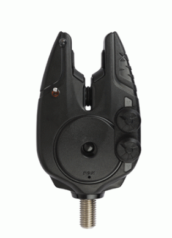
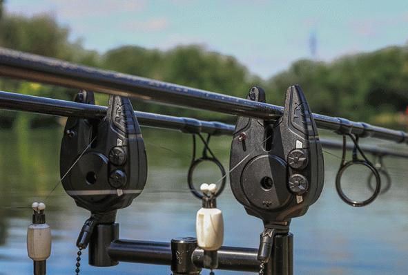
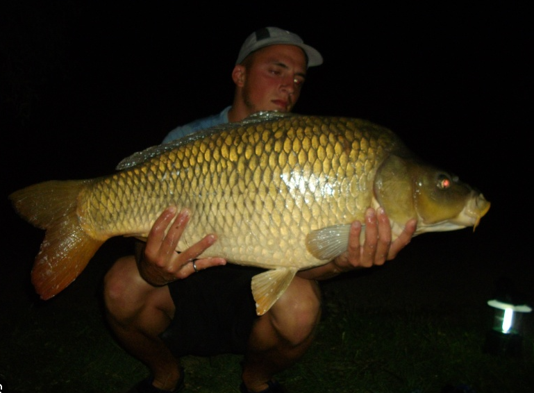
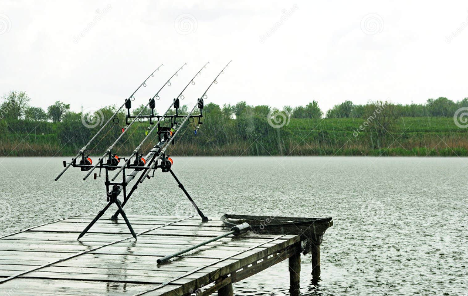
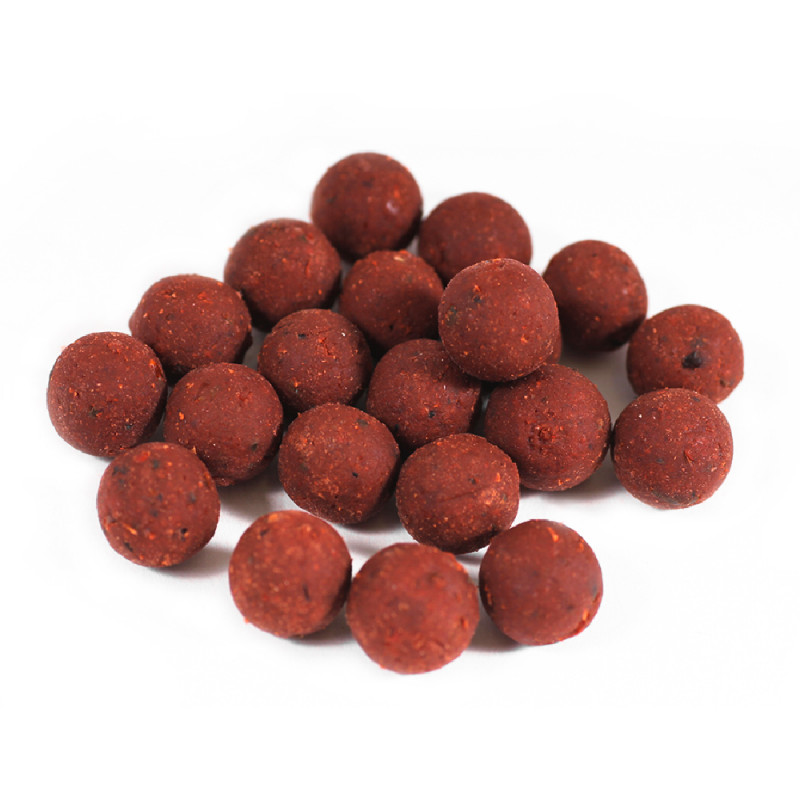
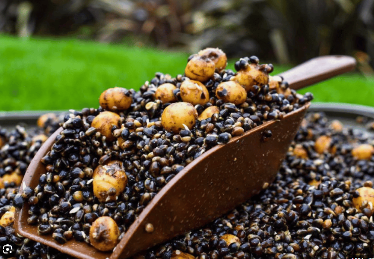

Techniques de Pêche
Différentes techniques de pêche à la carpe...
Bienvenue sur notre site dédié à la pêche à la carpe, un lieu où passion et expertise se rejoignent pour créer une communauté dévouée à cette fascinante activité. Que vous soyez un pêcheur expérimenté à la recherche de nouvelles astuces ou un novice cherchant à explorer l'univers captivant de la pêche à la carpe, vous êtes au bon endroit. Notre site offre une plongée immersive dans cet art, allant des conseils pratiques sur le choix des appâts et des montages de lignes, aux récits inspirants de pêcheurs chevronnés. Nous partageons une passion commune pour cette espèce remarquable et nous sommes ravis de vous accompagner dans votre périple au fil de l'eau. Explorez nos articles, découvrez des techniques innovantes, et rejoignez une communauté vibrante où l'esprit de camaraderie s'entremêle avec la quête constante de nouvelles aventures au bord des lacs et des rivières. Bienvenue dans l'univers captivant de la pêche à la carpe, où chaque capture raconte une histoire et chaque session crée des souvenirs durables.
Présentation de la Pêche à la Carpe
la pêche de la carpe est une activité passionnante qui nécessite du matériel spécialisé, des appâts attractifs et des stratégies bien pensées. En comprenant les besoins et les comportements de la carpe, les pêcheurs peuvent maximiser leurs chances de succès et profiter d'une expérience enrichissante au bord de l'eau.
I. Introduction
La pêche de la carpe, loin d'être simplement une activité de loisir, incarne une fusion unique entre la tradition séculaire et les avancées modernes dans le domaine de la pêche sportive. Cette disseration examinera en détail les multiples facettes de cette passion captivante, allant de son histoire ancienne à ses techniques innovantes.
II. Origines Historiques de la Pêche de la Carpe
La pratique de la pêche de la carpe remonte à des temps anciens, où elle était souvent une nécessité pour la subsistance. Progressivement, elle a évolué en une activité récréative, et son histoire riche reflète l'interaction dynamique entre l'homme et la nature à travers les siècles.
III. Biologie et Comportement de la Carpe
Comprendre la biologie de la carpe est fondamental pour tout pêcheur engagé. Des caractéristiques anatomiques à son comportement saisonnier, cette section explorera les nuances de cet inhabituel poisson d'eau douce, offrant des indices précieux pour les tactiques de pêche.
IV. Équipement de Pêche : Tradition et Innovation
L'équipement utilisé pour la pêche de la carpe a connu une transformation significative au fil du temps. Des cannes en bambou traditionnelles aux dernières avancées en matière de matériaux composites, cette section détaillera l'évolution des outils utilisés par les pêcheurs de carpes.
V. Appâts et Amorçage : L'Art de Séduire la Carpe
Les carpes sont réputées pour leur discernement alimentaire, ce qui rend l'appâtage et l'amorçage des aspects cruciaux de la pêche. Des appâts traditionnels aux nouvelles formulations scientifiquement élaborées, nous examinerons les stratégies visant à attirer ces poissons méfiants.
VI. Techniques de Pêche : Entre Tradition et Modernité
L'arsenal de techniques de pêche de la carpe s'étend de méthodes ancestrales à des approches plus contemporaines. Des pêches à la longue canne aux systèmes avancés de détection de touche, cette section détaillera les différentes approches, mettant en lumière leur efficacité et leur adaptation aux environnements variés.
VII. Défis Environnementaux et Éthiques
La pêche de la carpe s'accompagne d'une responsabilité envers la préservation de l'écosystème et le bien-être des poissons. Nous explorerons les enjeux environnementaux liés à cette pratique et les codes éthiques qui guident les pêcheurs responsables.
VIII. Impact Social : Communauté et Événements
La pêche de la carpe a transcendé le simple acte de pêcher pour devenir une communauté mondiale. Des rassemblements locaux aux compétitions internationales, cette section explorera le rôle social de la pêche de la carpe et son impact sur la culture de la pêche.
IX. Conclusion : Une Passion Intemporelle
En conclusion, la pêche de la carpe représente bien plus qu'une activité de loisir. C'est une expérience riche qui tisse des liens entre tradition et modernité, entre l'homme et la nature. En naviguant entre les rivières du passé et les lacs de l'innovation, les pêcheurs de carpes perpétuent une passion intemporelle qui continue de captiver et d'inspirer.
Matériel de Pêche
La canne à pêche
La canne à pêche est l'outil de base pour tout pêcheur de carpes. Les cannes spécifiquement conçues pour la pêche de la carpe sont souvent plus longues, offrant une meilleure portée pour lancer les appâts à des distances plus importantes. Elles sont également conçues pour gérer le poids et la force de ces puissants poissons.
Moulinet
Le choix du moulinet est crucial pour la pêche de la carpe. Il doit avoir une capacité de ligne adéquate et un système de frein robuste pour faire face aux sprints rapides et puissants de la carpe. Le chiffre présent sur le côté du moulinet représente la taille de celui- ci pour la carpe, sa taille peut être entre 5000 pour les plus petits jusqu'à 16000 pour les plus gros. Ce moulinet peut contenir environ 550 m de fil de 35/100
Ligne de Pêche
Une ligne de pêche résistante est nécessaire pour résister à la force de la carpe. Les lignes tressées ou nylon sont couramment utilisées, offrant une résistance élevée et une faible visibilité sous l'eau.
Montages et Hameçons
Différents montages sont utilisés, tels que le montage hélicoptère ou le montage à cheveu qui sont des montage de basse pour présenter l'appât de manière attrayante. Les hameçons doivent être suffisamment robustes pour supporter la force de la carpe.
Tout les types d'hameçons :

Et voici deux montages possible :
Montage cheveux

Montage hélicoptère

Équipement de Détection :
Les détecteurs de touche et les écureuils électroniques sont essentiels pour signaler les touches, car la carpe peut être subtile dans sa prise de l'appât.
Comment ça s'utilise ?
La canne à pêche est posée sur un détecteur qui a une petite fente avec une molette pour y placer le fil lors de la touche le poisson tire sur le fil ce qui fait tourner la molette et qui engendre un signal sonore puissant pour avertir le pêcheur. Ce qu' on appel écureuils c'est un poid placer entre le détecteur et le moulinet sur le fil est qui permet de tirer le fil si le poisson revient en direction de la canne
Éléments qui composent l'équipement de détection :
Détecteur


Et pour finir, le système mis en place
Présentation des Techniques la Pêche à la Carpe
L'amorçage
L'amorçage est une technique cruciale. Des quantités régulières d'appâts sont dispersées sur la zone de pêche pour attirer les carpes et les maintenir dans la région.

Choisir le bon moment
La pêche de la carpe est souvent plus réussie tôt le matin, en fin de journée ou pendant la nuit, lorsque les carpes sont plus actives.
Observation météorologique
Les conditions météorologiques peuvent grandement influencer le comportement des carpes. Une bonne observation des conditions météorologiques peut améliorer les chances de succès.
Appâts Utilisés
Types d'appâts recommandés pour la pêche à la carpe...
Bouillettes
Les bouillettes sont l'appât de prédilection pour la pêche à la carpe. Elles sont disponibles dans une variété de saveurs et de tailles, offrant une grande flexibilité pour s'adapter aux préférences des carpes
Maïs
Le maïs, qu'il soit naturel ou artificiel, est un appât économique et populaire. Les carpes sont attirées par sa couleur vive et son goût sucré.
Particules
Des particules telles que les graines de tournesol, les haricots et les pois, de pellets peuvent également être utilisées pour attirer les carpes. Elles ajoutent de la diversité à l'amorce et peuvent être très efficaces.
Mathis Schwaab : schwaabmathis@gmail.com
Hadrien Roux : hadrienroux9@gmail.com